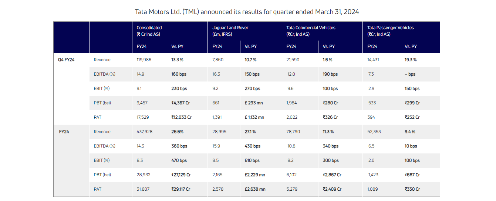

Newsroom
♦Latest press releases
- Tata Motors Passenger Vehicles (TMPV) and Tata Passenger Electric Mobility (TPEM) join hands with Bajaj Finance to offer financing program for authorized passenger and electric vehicle dealers. In the image, Mr. Dhiman Gupta, Chief Financial Officer, Tata Passenger Electric Mobility Ltd. and Director, Tata Motors Passenger Vehicles Ltd. and Mr. Siddhartha Bhatt, Chief Business Officer, Bajaj Finance Ltd. at the MoU signing in Mumbai.
- For FY24, TML reported record revenues of ₹ 437.9K Cr, an all-time high EBITDA at ₹ 62.8K Cr, highest ever PBT (bei) of ₹28.9K Cr (+₹27.1K Cr over the previous year) and net profit of ₹31.8K Cr (+₹29.1K Cr over the previous year). The strong performance has also helped to recognize a Deferred Tax Asset of ₹8.3K Cr at JLR and TML.

- Tata Motors, India’s largest commercial vehicle manufacturer, today strengthened its e-cargo mobility solutions with the launch of the all-new Ace EV 1000. Developed to revolutionise last-mile mobility, this zero-emission mini-truck offers higher rated payload of 1 tonne and a certified range of 161km on a single charge. The Ace EV is developed with rich inputs from its customers and the new variant will address evolving needs from various sectors like FMCG, beverages, paints & lubricants, LPG & dairy.
- Tata Motors, India’s largest commercial vehicle manufacturer, announced a significant milestone of its 9,00,000th vehicle rollout from its state-of-the-art Lucknow facility. The celebration included a flag-off ceremony in the presence of Mr. Durga Shanker Mishra, Chief Secretary, Government of Uttar Pradesh, and senior delegates from Tata Motors, at the facility.
- Tata Motors, India’s largest commercial vehicle manufacturer, has signed a Memorandum of Understanding (MoU) with South Indian Bank to offer convenient financing solutions to its commercial vehicle customers and dealerships. South Indian Bank will offer financing across the entire commercial vehicle portfolio, and customers will benefit from the bank’s wide network and specially curated easy repayment plans. The alliance represents a significant stride towards providing enhanced support to dealerships, fostering growth, minimising collateral requirements, lowering rate of interest and streamlining credit processing.
- Speaking on the development, Mr. P R Seshadri, MD & CEO, South Indian Bank, “At South Indian Bank, we are dedicated to fostering a secure, agile, and dynamic banking environment tailored to the needs of fleet owners and dealerships. Our collaboration with Tata Motors enables us to deliver seamless vehicle financing solutions to commercial vehicle dealers and customers. We are confident that our partnership with Tata Motors will result in best-in-class financing solutions, setting a new industry benchmark for excellence.”
Previous
5
Next